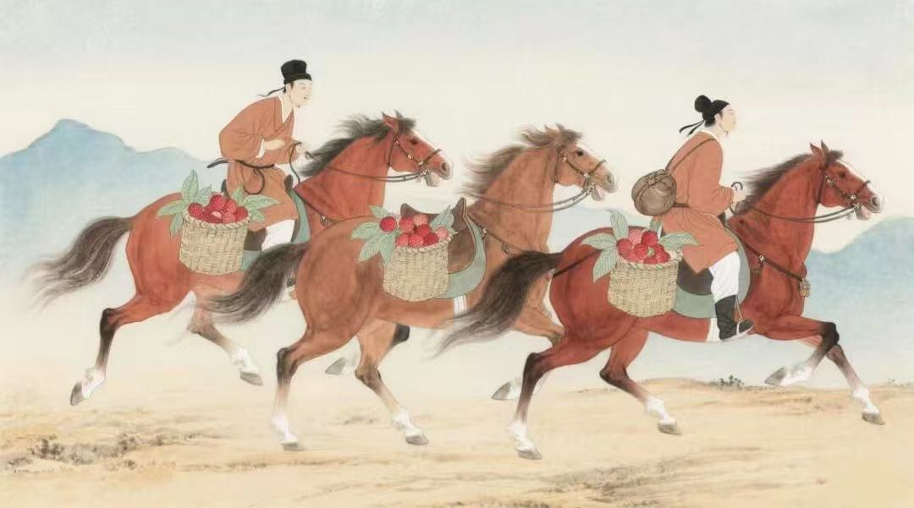
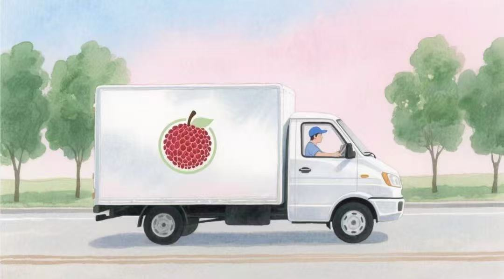
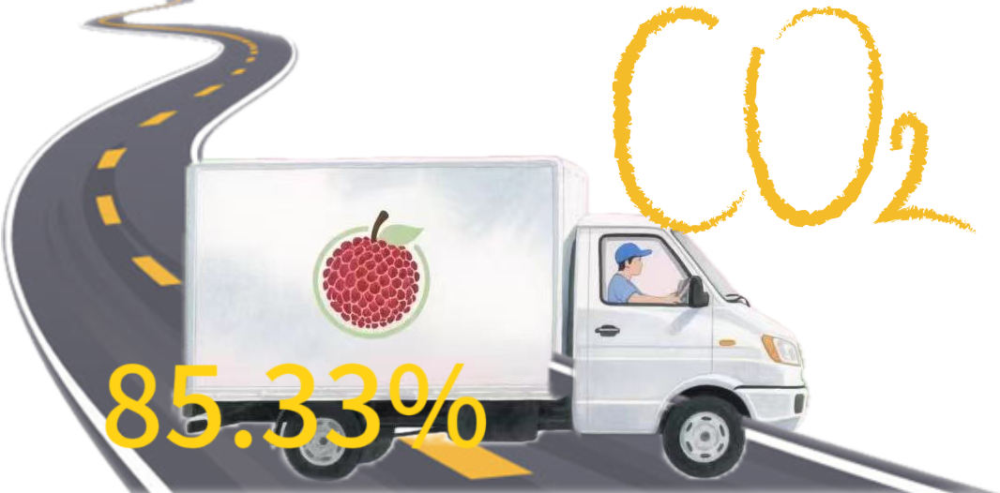
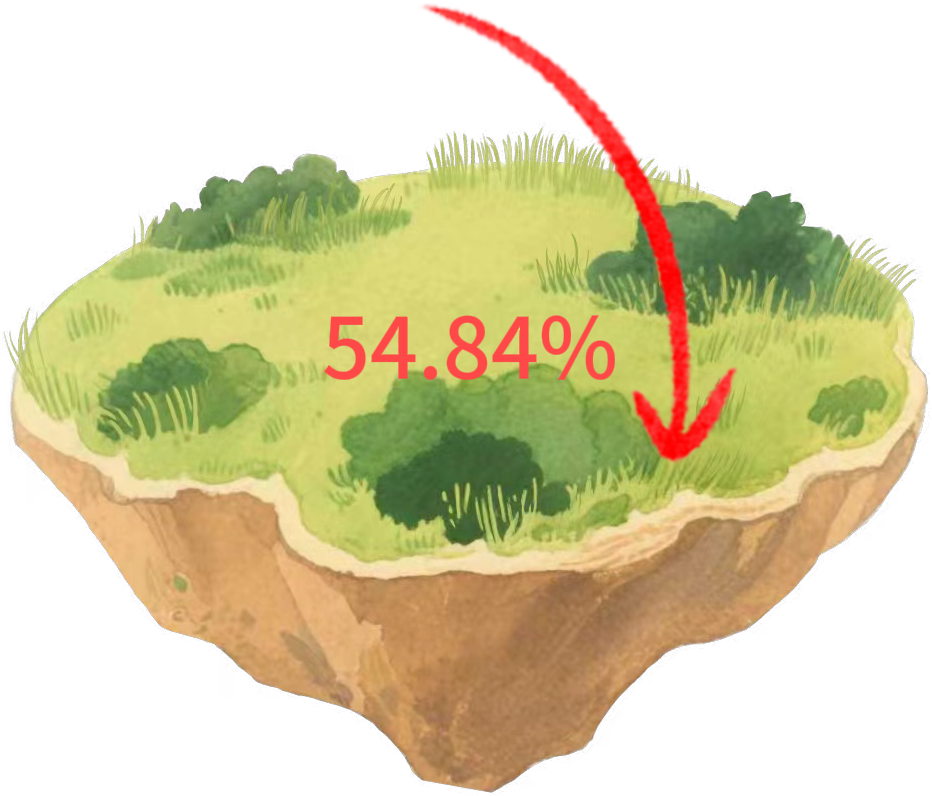
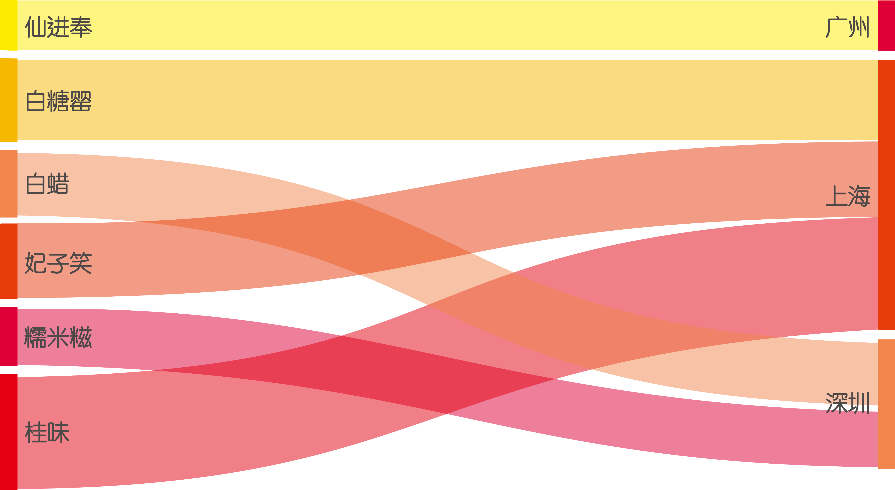
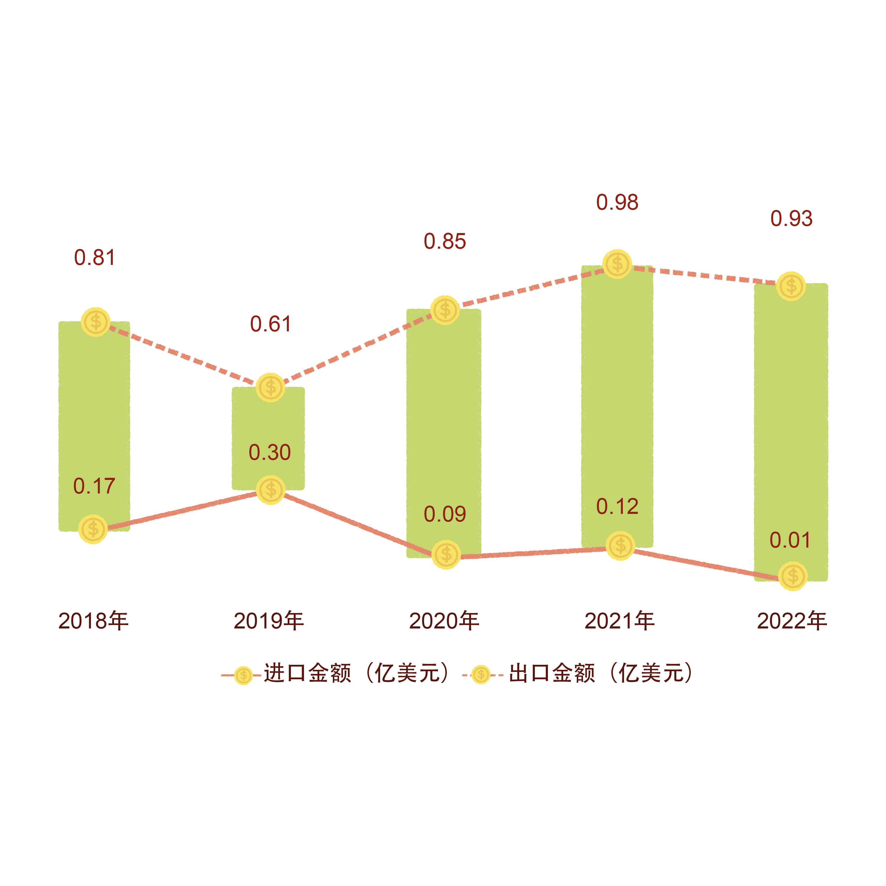
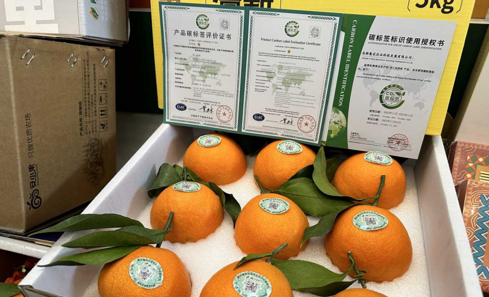

——我是一颗荔枝。我的故事，始于岭南丘陵的暖风与雨露——
诞生山野间
自雍正八年（1730 年）的《从化县志·物产志》记载“果之品三十有五，而荔枝为魁，核小而脂肥”以来，
这片土地便与我的名字紧紧相连。清代的屈大均在《广州荔枝词》中写下：
“五年不见水晶丸，今日酸时已饱餐”，那是对我初熟时清甜滋味的最好注解。
几个世纪后，我依然在这片被诗句描绘过的山坡上生长。你要赋予我怎样的名字？
在果园深处，我和同伴们静静挂在枝头。我们有着不同的外衣、不同的性格——
妃子笑的清脆甜爽、桂味的花香馥郁、状元红的沉稳浓郁、井岗红糯的红润多汁……当你走在枝叶间，阳光透过叶片洒下，伸手触碰到我们时，轻轻翻转，就能看到我的全部“档案”：
妃子笑
妃子笑
果形：长心形，果色淡红黄绿色
果肉：清脆甜爽，汁多味浓
规格：优等 <35g，一等 35–40g，合格 <50g
风味：可食率78–83%，固形物17–20%，酸度0.23–0.30%
糯米糍
糯米糍
果形：卵圆形，果色近圆暗红
果肉：肉厚质嫩，汁多清甜
规格：优等 <38g，一等 38–50g，合格 <56g
风味：可食率82–86%，固形物18–21%，酸度0.18–0.26%
状元红
状元红
果形：近圆形，果色深红
果肉：甜中带酸，滋味浓郁
规格：优等 <42g，一等 42–54g，合格 <58g
风味：可食率76–80%，固形物16–18%，酸度0.31–0.35%
桂味
桂味
果形：扁圆形，果色紫红
果肉：脆嫩爽口，花香馥郁
规格：优等 <56g，一等 56–64g，合格 <70g
风味：可食率78–83%，固形物18–21%，酸度0.15–0.21%
怀枝
怀枝
果形：心脏形，果色鲜红
果肉：甜中微酸，风味浓厚
规格：优等 <38g，一等 38–44g，合格 <52g
风味：可食率68–72%，固形物17–20%，酸度0.15–0.20%
井岗红糯
井岗红糯
果形：心形，果色鲜红
果肉：汁多甘甜，核小肉厚
规格：优等 <38g，一等 38–50g，合格 <56g
风味：可食率80%，固形物17–20%，酸度0.15–0.35%
（数据来源于：《从化华隆荔枝最新执行标准》）
当你选定了我，我便会带你飞越枝叶与山坡，回到我扎根的土地：广东省广州市从化区江埔街道，这里位于粤北山地与珠江三角洲平原的过渡带，北接山区，南临平原，地形呈东南高、西北低的格局。
江埔街道属于亚热带季风气候区，年均气温 21.5 ℃，年降水量 1,992.7 mm，年日照时长 1,588 小时。光、热、水资源丰富，这样的气候为荔枝生长提供了天然保障。
（轻触绿色按钮探索荔枝出生地）
江埔街道整体呈东南高、西北低的地势，海拔主要在 0–100 m。
低海拔区（<50 m）温差小、灌溉便利，有利于果实糖分积累；中海拔缓坡（50–100 m）日照充足，使荔枝风味更浓。
（数据来源于：从化荔枝江埔街亚热带低山丘陵生态环境保护与可持续发展案例数据集）
我跨越千里给你带来鲜甜
——从枝头到你的舌尖，每一步都留下“碳足迹”——
从“枝头”到“舌尖”
在“双碳”目标背景下，食品不仅仅是味觉享受，它们背后的环境账本同样值得关注。 荔枝需要复杂的冷链与物流体系才能保持鲜美，它们的旅程中隐藏着难以忽视的碳排放。
要想全面了解这份“甜蜜”背后的环境代价，我们需要一个科学的工具。 全生命周期评估法是一种系统、全面评估产品或服务在其“从摇篮到坟墓”全过程中所产生温室气体排放总量的方法。
农产品供应链示意图:
依据该方法进行分析，荔枝供应链系统的碳足迹计算的边界包括生产环节、流通加工环节、贮存环节、运输环节、销售环节、配送环节、消费者环节以及荔枝腐损带来的碳排放。
生产
221 g/kg储存
0.2862 g/kg·d预冷
8.3214 g/kg包装
230.628 g/kg
运输
0.0817 g/t·km
销售
25.59 g/kg·d
废弃
41.21 g/kg以上是荔枝全程冷链中主要环节碳足迹（数据来源于：广东农业科学《基于生命周期法的农产品供应链碳足迹分析》）
我在果园里生长，不只是依靠阳光雨露。
——在我的身边，还有一些意想不到的“朋友”和帮助——
生产新范式
在荔枝生长的每一个环节，低碳理念正悄然改变着传统种植方式。通过抵御虫害，节约能源，减少化肥使用，荔枝得以在更加绿色、低碳的环境中茁壮成长。荔枝种植户们借助自然的力量与创新的智慧，为每一颗荔枝注入 “低碳基因”，每一颗荔枝的成长都成为了对可持续未来的承诺。
生物防治：以虫治虫的生态奇迹
荔枝蝽，作为荔枝生长的一大劲敌，过去常令果农们头疼不已。但如今，平腹小蜂这位 “秘密武器” 登上了舞台。这种小小的寄生蜂，堪称荔枝蝽的 “天敌克星”。据统计，在东莞、广州等地的示范推广中，每次每亩投放 20 卡平腹小蜂卵卡，每卡羽化平腹小蜂预计 350 头。这些平腹小蜂雌成虫经交配后，便会主动在果园内穿梭，精准寻找荔枝蝽的卵，并将自己的卵产在其中。如此一来，荔枝蝽的卵便成了平腹小蜂幼虫的 “营养库”，无法正常孵化繁殖。
数据显示，平腹小蜂对荔枝蝽卵的防治效果可达 70% - 90%。荔枝园应用平腹小蜂后，荔枝蝽的危害得到显著控制，不仅减少了化学农药的使用，还避免了开花期喷施农药对蜜蜂等有益传粉昆虫的伤害，可谓一举两得。
非嗜食植物次生化合物：天然的害虫驱避剂
除了以虫治虫，研究表明，白花非洲山毛豆、飞机草和大叶桉的乙醇提取物对荔枝蒂蛀虫成虫产卵有着神奇的驱避作用。在广西、广东等地的研究与实践中发现，这些非嗜食植物次生化合物的驱避效果在 80% - 90% 之间。
当在荔枝园周边合理种植这些植物，或者将其提取物进行适当处理后应用于果园，处理区对荔枝蒂蛀虫的防治效果可达 70% 以上。这一发现，为荔枝种植开辟了一条绿色防控的新路径，减少了化学农药的依赖，让荔枝在更加自然、健康的环境中成长。
沼渣还田：废弃物的华丽转身
在广东高州市，一场关于肥料革命的实践正在上演。自 2021 年被列为全国首批绿色种养循环农业试点县以来，高州市政府大力推动粪肥还田技术在荔枝种植中的应用。三年间，超过 15 万亩荔枝园参与其中，探索出 “粪肥 + 配方肥 + 机械深施” 等多种模式。
在施用基肥或追肥时，果农们通过机械或人工在果树的滴水线旁挖深穴或施肥沟，每株施入约 20 公斤粪肥。这一举措成效显著，化肥用量减少 20%，荔枝却实现了增产 14%，糖度增加 2.2%，维生素 C 含量提高 16.3%。果实鲜红饱满、果肉晶莹透亮、口味清脆甜香，市场竞争力大幅提升，平均田头价格卖到了 12 元 / 斤。
通过构建 “猪场 + 沼气 + 果园 + 沼液肥” 等畜禽粪污收集处理利用模式，高州市年处理消纳畜禽粪污达 19 万吨，连续两年推动全市畜禽粪便资源利用率达 95% 以上，不仅解决了养殖业污染问题，还为荔枝种植提供了优质的有机肥源，实现了农业废弃物的资源化利用，为低碳农业发展提供了宝贵经验。
（数据来源于：微观三农《广东省高州市绿色种养 结美“荔”硕果》）
这些低碳技术的综合应用，正在从化及更多荔枝产区构建一个绿色、高效、可持续的种植体系。它们不仅守护着荔枝的品质与产量，更让每一颗荔枝在成长过程中，践行着低碳环保的理念，为地球的绿色未来贡献力量。
——我曾被快马加鞭送往长安，如今乘着冷链列车穿越山海——
冷链vs常温
近年来，谈及生鲜运输，公众首先联想到的往往是“冷链运输”。荔枝作为一种极易腐败的水果，在常温下的赏味期限极短，远距离运输面临巨大挑战。自古以来，荔枝的保鲜一直是难题，唐代主要依靠驿道快马和竹筒密封进行保护，而现代则借助冷链物流技术，实现了从采摘到终端销售“温度不断链”的全程低温控制。
 现代冷冻技术能够将温度降至零下30℃，荔枝采摘后迅速预冷，再通过冷链运输，最大限度地保持果实的新鲜，实现“从枝头到舌尖”的鲜美传递。荔枝作为中国重要的水果品类，年产量达264.97万吨，按19%的冷链覆盖率估算，其供应链碳排放总量高达8002万吨二氧化碳当量（CO₂e）。
现今，多家冷链及快递企业已具备全程保障荔枝鲜度的能力。值得注意的是，冷链系统本身也是显著的碳排放源，约占全球电力消耗的15%及碳排放的1%。
那么改用常温运输会带来更低的碳排放吗？
全球范围内，约40%的食品需要依赖冷链物流，但因冷链不足，仍有超过13%的食物被浪费，其中63%的损耗集中在发展中国家。以中国为例，2021年食品冷链物流需求超过3亿吨，但冷链流通综合覆盖率仅为19%，每年因食品浪费带来的经济损失高达6800亿元，同时占全国温室气体排放的4%。全球食品系统贡献了约30%的温室气体排放，其中7%源自食物损耗与浪费（FLW）。
也就是说，从经济效应出发，冷链运输模式下的荔枝货架期更长，腐烂率更低，进一步会促进环境效应的提升。
有研究提出了单位有效碳排放方法，冷链流通下的碳排放比常温流通减少了34.84%。 在冷链流通场景下，荔枝的单位有效碳排放为0.38 kgCO₂/kg，综合碳排放效用为85.33%。
提升冷链流通比例不仅能提高综合碳效用，还能实现节约土地的目标。 若将当前中国的冷链流通率提升至95%，则荔枝供应链的综合碳排放效用将提升至81.65%，所需土地面积减少54.84%。
（数据来源于：《Calculation and utility analysis of lychee life-cycle carbon emissions considering food loss and waste》）
因此，在满足消费者对新鲜荔枝日益增长需求的同时，物流行业需平衡经济效益与环境影响。快速运输虽然保证了产品鲜度，但伴随高能耗交通工具的碳排放和大气污染问题亦需引起高度关注，推动绿色低碳冷链技术与管理创新成为未来发展的关键。
我从岭南走向世界，带着甜蜜也带着使命
——这是属于我绿色升级的征程——
出口低碳新时代
如今，荔枝这一传统岭南佳果早已不再局限于产地周边的消费，而是逐渐走向更广阔的市场。消费者对于新鲜水果的需求不断提升，也推动了荔枝在全国范围内的流通与普及。
2025年荔枝生产地图
（鼠标悬浮查看荔枝生产数据）
2025年5-6月荔枝电商销量目的地
热门荔枝品种及主要销售市场 
（数据来源于：抖音电商数据、《2025年全国荔枝生产形势分析与管理建议》）
全国销售版图反映了“南甜北渐，全面开花”的态势。广东作为荔枝主产地，本地消费占比达 12.4%，位居第一。但荔枝早已突破地域限制，走向全国各地。北京、江浙沪、山东等地的荔枝消费量紧随广东之后。特别是今年，随着荔枝丰收及物流、保鲜技术发展，荔枝价格更加亲民，进一步推动其在全国的销售。
据相关数据，新疆、宁夏、西藏等西北地区的荔枝销量同比增速均超 3.6 倍 ，曾经稀缺的荔枝如今在全国各地的餐桌上愈发常见。在华北地区，今年荔枝销售旺季，大型水果批发市场的荔枝日交易量平均达 150 吨，较去年同期增长 120%；在东北地区，通过电商平台销售至黑龙江、吉林、辽宁等地的荔枝订单量同比增长 280%，且消费者购买频次增加，从去年的人均购买 1.2 次提升至今年的 2.1 次。
与此同时，中国荔枝也在出口端取得增长：从2018年起，出口贸易顺差从0.64亿美元增加至2022年的0.92亿美元，增幅约43.17%。2022年出口总量47,612.77吨、金额9,294.99万美元。
其中鲜荔枝出口量14,548.74吨（占比30.56%），金额4,412.9万美元（占47.48%）；罐头荔枝量33,035.04吨（69.38%），金额4,864.35万美元（52.33%）；荔枝干极少，仅28.99吨、17.73万美元。这表明鲜荔枝在出口结构中占据重要地位，对物流与保鲜提出更高要求。
（数据来源于：知乎《2023年中国荔枝产业数据分析简报》）
荔枝在全球市场中的潜力不容忽视：Research and Markets预计，到2028年全球荔枝市场规模将达87.9亿美元。这伴随着国际上对绿色环保越来越严的要求，“绿色贸易壁垒”成为现实挑战。绿色贸易壁垒是指在国际贸易活动中，进口国以保护自然资源、生态环境和人类健康为由而制定的一系列限制进口的措施。这催生了“低碳 + 可溯源”体系的建设需求。
值得关注的是广东在该领域的领先实践：广州从化区联合政府、检验机构、气象中心与保险公司，创建全国首个荔枝全生命周期守护项目，通过“气象防灾预警 + 碳足迹核算 + 碳足迹保险”，形成“一条链”服务体系，提升抗风险能力，同时为绿色出口背书。广东省广业检验检测集团负责人透露：“我们将重点支持企业绿色品牌认证工作，将融合‘碳足迹’创新理念的优质荔枝推向广阔的海外市场，赋予荔枝产品独特的低碳价值，对接国际市场上的绿色低碳消费需求。”
在政策端，“建立产品碳足迹管理体系、碳标识认证制度”已被列入 2025 年政府工作报告中，这是响应绿色贸易壁垒挑战、提升出口产品国际竞争力的重要举措。根据国家《实施方案》，到 2027 年重点产品碳足迹管理体系计划初步建立，涵盖约 100 个产品的核算规则、因子数据库及标识认证制度；目标至 2030 年进一步完善并实现国际对接。另外，2023 年《意见》明确指出，到 2025 年将在国家层面出台约 50 个重点产品的碳足迹标准，并建立认同的碳标识认证制度。
国际经验表明，面对越来越严的绿色贸易壁垒，为使中国荔枝出口真正迈入“绿色溯源”时代，有必要引入全生命周期碳足迹核算和“碳标签”认证体系。将碳足迹追踪与绿色认证融入出口流程，不仅关乎合规，更能提升中国荔枝在国际市场中的品牌溢价和竞争力。
蒲江爱媛橙以生命周期评价方法为基础，计算产品的碳足迹，一共梳理了原辅料获取、栽培养护及采摘、产品包装物获取、入库储存、分拣包装五个单元数十个作业流程所产生的碳排放量，得出蒲江爱媛橙的碳排放量为0.295千克，可以成为荔枝突破绿色贸易壁垒的经验借鉴。
（图片来源：亚洲水果报道：《蒲江爱媛橙获全国首个橙类“碳标签”认证》）
通过“低碳+可溯源”的手段，中国荔枝出口将更具市场竞争力，有望赢得国际消费者和监管方的青睐。